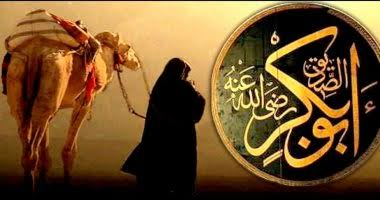

الحسن بن علي
الحسن بن علي بن أبي طالب الهاشمي القرشي (15 رمضان 3 هـ - 49 هـ، أو 50 هـ، أو 51 هـ / 4 مارس 625 م - 670 م)، هو أول أسباط نبي الإسلام محمد بن عبد الله وحفيده، وخامس الخلفاء الراشدين، والإمام الثاني عند الشيعة، أطلق عليه النبي محمد لقب سيد شباب أهل الجنة فقال: «الحسَنَ والحُسَيْنَ سيِّدا شبابِ أَهْلِ الجنَّةِ»، وكنيته أبو محمد، أبوه علي بن أبي طالب ابن عم النبي محمد، ورابع الخلفاء الراشدين، وأول الأئمة عند الشيعة، أمه: فاطمة بنت النبي محمد، وقيل إنه أشبه الناس بالنبي.
ولد في النصف من شهر رمضان عام 3 هـ، وكان النبي محمد يحبه كثيرًا ويقول: «اللهم إني أحبه فأحبه»، وكان يأخذه معه إلى المسجد النبوي في أوقات الصلاة، فيصلي بالناس، وكان الحسن يركب على ظهره وهو ساجد، ويحمله على كتفيه، ويُقبّله ويداعبه ويضعه في حجره ويَرْقِيه، كما كان يعلمه الحلال والحرام، توفي جده النبي محمد سنة 11 هـ وكذلك توفيت أمه فاطمة في نفس السنة، شارك الحسن في الجهاد في عهد عثمان، فشارك في فتح إفريقية تحت إمرة عبد الله بن سعد بن أبي السرح، وشارك في فتح طبرستان وجرجان في جيش سعيد بن العاص، كما شارك في معركة الجمل ومعركة صفين.
بويع بالخلافة في أواخر سنة 40 هـ بعد وفاة علي بن أبي طالب في الكوفة. واستمر بعد بيعته خليفة للمسلمين نحو ثمانية أشهر، ثم تنازل عنها لصالح معاوية بن أبي سفيان بعد أن صالحه على عدد من الأمور. وانتقل الحسن بعد ذلك من الكوفة إلى المدينة المنورة وعاش فيها بقية حياته حتى توفي في سنة 49 هـ، وقيل سنة 50 هـ لخمسِ ليالٍ خَلَونَ من شهر ربيع الأول، ودفن بالبقيع.
يعتبره أهل السنة والجماعة خامس الخلفاء الراشدين وأن النبي بشّر أنه سيصلح الله به بين فئتين من المسلمين، وبسببه انتهت الفتنة، ويعتقد الشيعة الاثنا عشرية أنه الإمام الثاني من الأئمة الاثني عشر، ومن المعصومين الأربعة عشر، ومن أصحاب الكساء. قيل إنّ الحسن كان كثير الزواج والطلاق، وشكك البعض بذلك، ولا يُعرف من أسماء زوجاته إلا إحدى عشرة زوجة بما فيهنّ أمهات الأولاد، ذكر الذهبي أن للحسن اثني عشر ابنًا ذكرًا، وذكر أنه ولم يُعقِب منهُم سِوى الحسن المثنى وزيد بن الحسن، وذكر الفخر الرازي أن له من الأولاد ثلاثة عشر ذكرًا وست بنات، وذكر المفيد خمسة عشر ولدًا ذكرًا وأنثى.
سبب تلقيبه بخامس الخلفاء الراشدين: استدل علماء المسلمين على أنه أحد الخلفاء الراشدين بالحديث الذي ورد في دلائل النبوة من طرق عن سفينة مولى رسول الله: أن رسول الله ﷺ قال: « الخلافة بعدي ثلاثون سنة، ثم تكون ملكا»، وإنها كملت الثلاثون بخلافة الحسن بن علي، فإنه نزل عن الخلافة لمعاوية في ربيع الأول من سنة إحدى وأربعين، وذلك كمال ثلاثين سنة من موت رسول الله ﷺ; فإنه توفي في ربيع الأول سنة إحدى عشرة من الهجرة.